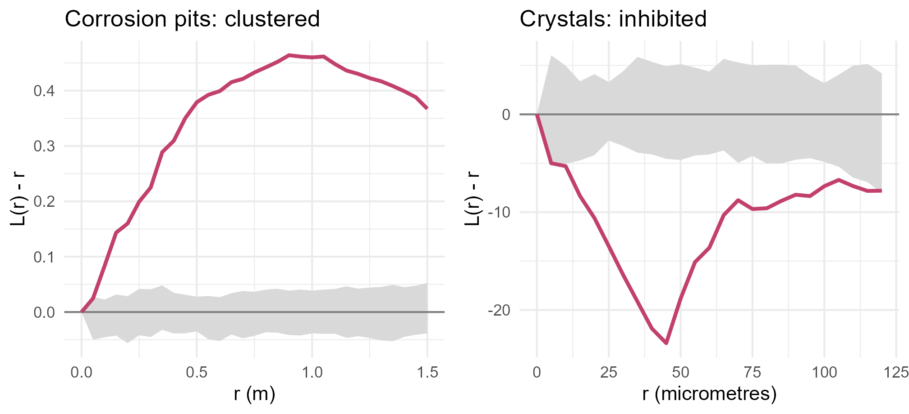

Module 9 · Lesson 9 of 13 Week 141 of 160 About 5–7 hours
Point patterns II
Clusters, gaps and the models behind them
Ripley’s K and L functions look at every pair of points, at every distance. Use them, with simulation envelopes, on three patterns from the plant: corrosion pits on a tank floor that cluster, crystals on a cooled plate that keep their distance, and leaks whose apparent clustering turns out to be an inhomogeneous intensity. Fit a Poisson model with a covariate, a Thomas cluster process and a Strauss inhibition process, and read their parameters as engineering facts.
Lesson 8 asked how many points there are where. This lesson asks how the points relate to each other. Two very different physical processes can make points deviate from complete randomness:
- Clustering: points attract, or share a cause that comes in patches. Corrosion pits form where water collects under a tank’s floor plates, so they come in groups.
- Inhibition (regularity): points repel. A crystal growing on a cooled plate depletes the solution around it, so a new crystal rarely nucleates close to an existing one.
And a third thing that looks like clustering but isn’t: an inhomogeneous intensity, like the leaks near the old units. Telling these apart is this lesson’s job.
Two datasets from the plant today: tank T-104’s floor scan, and a microscope slide from the crystallization lab. Plus the leaks, for an important twist.
In this lesson you’ll:
- compute Ripley’s K function and its square-root version, the L function
- judge them against CSR with simulation envelopes
- recognize clustering, inhibition and inhomogeneity in the L function
- fit a Poisson model with a covariate, a Thomas cluster process and a Strauss inhibition process
- use the inhomogeneous L function to separate inhomogeneity from clustering
Ripley’s K and L functions
Ripley’s K function counts, for each point, the other points within distance r, averages over the points, and divides by the intensity:
K(r) = \frac{1}{\lambda}\,\mathrm{E}[\text{number of other points within } r \text{ of a typical point}].
Under CSR, K(r) = \pi r^2, the area of a disc of radius r. More than that means more neighbours than random (clustering at scale r), less means fewer (inhibition). The L function, L(r) = \sqrt{K(r)/\pi}, turns the parabola into a straight line, L(r) = r under CSR, so L(r) - r is easy to read: positive for clustering, negative for inhibition. Both need edge corrections, since the discs around points near the edge stick out of the window.
The data: tank_pits.csv, the 265 pits found on tank T-104’s floor (a disc 14 m across; coordinates in metres from its centre); crystal_nuclei.csv, 170 crystals in a 1 × 1 mm microscope field (coordinates in micrometres). The setup code reads both, and the leaks.
Your turn. Compute K for the pits, and compare K(0.5) with its CSR value \pi \times 0.5^2.
The area of a disc: \pi r^2.
K <- Kest(P, r = seq(0, 1.5, by = 0.05), correction = "isotropic")
k <- K$iso[K$r == 0.5]
c(K = k, csr = pi * 0.5^2, L = sqrt(k / pi))K(0.5) = 2.43 against 0.79 for CSR: a typical pit has three times as many other pits within 50 cm as random pits would. L(0.5) = 0.88, against 0.5. The isotropic correction (Ripley’s) weights each pair by the share of the circle through the second point that lies inside the window.
Your turn. Compute L(r) - r for the pits at 0.1, 0.3, 0.5, 1.0 and 1.5 m.
Subtract the distances, L$r.
L <- Lest(P, r = seq(0, 1.5, by = 0.05), correction = "isotropic")
keep <- round(L$r, 2) %in% c(0.1, 0.3, 0.5, 1, 1.5)
setNames(round(L$iso[keep] - L$r[keep], 3), L$r[keep])0.083 at 10 cm, 0.225 at 30 cm, 0.379 at 50 cm, 0.460 at 1 m, then down to 0.367 at 1.5 m. L(r) - r rises while r is within the clusters, peaks around 1 m, a rough guide to the clusters’ size, and falls beyond it, where pairs from different clusters dominate.
Simulation envelopes
How far from L(r) = r is “far”? There’s no simple formula, so we simulate: generate many CSR patterns with the same number of points in the same window, compute L for each, and draw the band between the highest and lowest simulated values at each r. That’s a simulation envelope. With 39 simulations, the observed curve has a 1 in 40 (2.5%) chance of being above the band at a given r under CSR, and 2.5% below.
Your turn. Compute the envelope for the pits, and find where the observed L is above it.
39 simulations.
set.seed(9091)
e <- envelope(P, Lest, nsim = 39, r = seq(0, 1.5, by = 0.05), correction = "isotropic", verbose = FALSE)
above <- e$r[e$obs > e$hi]
c(L_obs = e$obs[e$r == 0.5], upper = e$hi[e$r == 0.5], from = min(above), to = max(above))At 50 cm, the observed L = 0.88 against an upper envelope of 0.53, and the curve is above the envelope at every distance from 10 cm to 1.5 m. The pits are clustered, at all these scales. (Checking many r values against a pointwise envelope inflates the error rate, like multiple testing; spatstat’s global = TRUE option gives a band with a proper overall level.)

Your turn. Now the crystals. Compute L(r) - r at 45 µm, the smallest nearest-neighbour distance, and the share of crystals whose nearest neighbour is closer than 45 µm.
Closer than 45 µm.
L <- Lest(C, r = seq(0, 120, by = 5), correction = "isotropic")
nn <- nndist(C)
c(L_minus_r_45 = L$iso[L$r == 45] - 45, min_nn = min(nn), share_closer = mean(nn < 45))L(45) - 45 = -23.4: a typical crystal has far fewer neighbours within 45 µm than random points would. Yet the closest pair is only 8.9 µm apart, and 24% of the crystals have a neighbour closer than 45 µm: the inhibition is strong but not absolute. A crystal nucleating near another one isn’t impossible, just much less likely.
Your turn. Compute the envelope for the crystals, and find the distances at which the observed L is below it.
The lower envelope is e$lo.
set.seed(9092)
e <- envelope(C, Lest, nsim = 39, r = seq(0, 120, by = 5), correction = "isotropic", verbose = FALSE)
below <- e$r[e$obs < e$lo]
range(below)Below the envelope from 10 µm to 115 µm: inhibition, detectable well beyond the 45 µm radius, because a crystal’s empty neighbourhood also changes the counts at somewhat larger distances.
Models: clusters and inhibition
Summary functions describe; models explain, and their parameters are physical quantities.
A Thomas process (a Neyman-Scott cluster process) places invisible “parent” points by CSR, with intensity \kappa; each parent has a Poisson number of “offspring”, with mean \mu, scattered around it with a Gaussian of standard deviation \sigma; only the offspring are seen. For the tank floor: \kappa is the density of water pockets under the plates, \mu the pits per pocket, \sigma the pocket’s size. kppm() fits it by matching the theoretical K function to the observed one.
Your turn. Fit a Thomas process to the pits.
clusters = "Thomas".
fit <- kppm(P ~ 1, clusters = "Thomas")
c(kappa_per_m2 = fit$clustpar[["kappa"]], sigma_m = fit$clustpar[["scale"]], mu = fit$mu)About 0.29 clusters per m² (44 water pockets on the 154 m² floor), each with an average of 6 pits spread with \sigma = 0.32 m: most of a cluster’s pits lie within 65 cm (2\sigma) of its centre. For the inspection engineer, that says: where you find one pit, look within a metre for five more, and the pockets are a few metres apart. An envelope of L simulated from the fitted Thomas model contains the observed curve at every distance: the model fits.
A Strauss process describes inhibition: each pair of points closer than R multiplies the pattern’s probability density by \gamma (0 \le \gamma \le 1). \gamma = 1 is CSR; \gamma = 0 is a hard core, no pairs closer than R at all; in between, close pairs are discouraged. It’s fitted with ppm() and an interaction term.
Your turn. Fit a Strauss process with R = 45 µm to the crystals, and compute \gamma.
The interaction is Strauss.
fit <- ppm(C ~ 1, Strauss(r = 45))
print(coef(fit))
exp(coef(fit)[["Interaction"]]) # gamma\gamma = 0.17: each pair of crystals closer than 45 µm makes a configuration about 6 times less likely. In physical terms, the depletion zone around a growing crystal suppresses nucleation by roughly that factor. ppm() fits Gibbs processes like this by maximizing the pseudolikelihood, since the true likelihood’s normalizing constant is intractable.
Your turn. Why 45 µm? Choose R by profile pseudolikelihood: fit the model for R = 20, 25, …, 80 µm and keep the best.
Steps of 5 µm.
prof <- profilepl(data.frame(r = seq(20, 80, by = 5)), Strauss, C ~ 1)
prof$param[which.max(prof$prof), ]45 µm, the radius used above. The lab’s crystallization model says the depletion zone after 10 minutes should be 40 to 50 µm; the point pattern agrees. A point pattern can measure a physical length scale that’s hard to measure directly.
The leaks: clustered or inhomogeneous?
The L function of the leaks, computed as if their intensity were constant, lies above its CSR envelope at most distances up to 150 m. Are the leaks clustered? Not necessarily: an inhomogeneous Poisson process (independent points, varying intensity) also has more close pairs than CSR, simply because the points crowd where the intensity is high. To tell the two apart, model the intensity, then check what’s left.
An inhomogeneous Poisson model with a log-linear intensity, \log\lambda(u) = \beta_0 + \beta_1 d(u), is fitted by ppm() with the covariate as a function.
Your turn. Fit it with the distance from the old units, and compare its AIC with the homogeneous model’s.
X ~ dist_old.
dist_old <- function(x, y) sqrt((x - 300)^2 + (y - 560)^2)
f0 <- ppm(X ~ 1)
f1 <- ppm(X ~ dist_old)
c(coef(f1), per_100m = exp(100 * coef(f1)[["dist_old"]]), AIC_homogeneous = AIC(f0), AIC_distance = AIC(f1))The intensity falls by a factor of 0.71 for every 100 m from the old units (it halves every 200 m), and the AIC drops from 3,849 to 3,751. That’s Lesson 8’s distance bands as a model: a Poisson regression for point patterns, fitted by the Berman-Turner device, which turns the likelihood into a weighted Poisson GLM on a fine set of quadrature points.
Your turn. Now compare the ordinary L function with the inhomogeneous L function, which divides each pair’s contribution by the fitted intensities at its two points, so that an inhomogeneous Poisson process gives L(r) = r.
Give it the fitted model, f1.
dist_old <- function(x, y) sqrt((x - 300)^2 + (y - 560)^2)
f1 <- ppm(X ~ dist_old)
rr <- seq(0, 150, by = 5)
L <- Lest(X, r = rr, correction = "border")
Li <- Linhom(X, lambda = f1, r = rr, correction = "border")
keep <- rr %in% c(25, 50, 100)
rbind(homogeneous = L$border[keep] - rr[keep], inhomogeneous = Li$border[keep] - rr[keep])With a constant intensity, L(r) - r is 1.9 m at 25 m, 12.7 at 50 m and 24.4 at 100 m: apparent clustering, growing with distance. With the fitted intensity, it’s -1.0, 7.5 and 6.8, much smaller, and an envelope simulated from the fitted inhomogeneous Poisson model contains the observed inhomogeneous L at every distance. The leaks are an inhomogeneous Poisson pattern: they don’t cluster around each other; they’re more frequent where the equipment is old. For maintenance, that’s the difference between “a leak predicts another leak nearby” (it doesn’t) and “old units leak more” (they do).
NoteGo deeper: Cox processes, and why one pattern can’t always tell
A Cox process is a Poisson process whose intensity is itself random, for example \lambda(u) = e^{Z(u)} with Z a Gaussian process: the log-Gaussian Cox process, which connects point patterns to Lessons 3 to 5’s geostatistics. Thomas processes are Cox processes too (the random intensity is the sum of the Gaussian bumps around the parents). Here’s the catch: from a single pattern, a cluster process and an inhomogeneous Poisson process with the right intensity surface can be indistinguishable. Bartlett pointed this out in 1964. What separates them is outside information: a covariate that explains the intensity (the old units’ distance, here), replicated patterns (several tank floors), or physical knowledge. That’s why the leak analysis used the distance covariate, not just the L function. Baddeley, Rubak and Turner’s Spatial Point Patterns (CRC, 2015), chapter 12, covers both.
Challenge round
Challenge 1 · Does the cluster model fit? In RStudio, simulate an envelope of L from the fitted Thomas model (envelope(fit, Lest, nsim = 39)) and plot it with the observed curve. Then fit a homogeneous Poisson model to the pits and do the same. Which model’s envelope contains the observed curve?
Challenge 2 · A likelihood ratio test. In RStudio, test the distance term in the leaks’ model with anova(f0, f1, test = "LRT"). The deviance drops by 99.4 on one degree of freedom. Then add a term for the tank farm (x > 800 & y < 330) and test it too. Does it improve the model, and why might it, even with the distance term in?
Quick quiz
1. Under complete spatial randomness, K(r) equals:
The expected number of neighbours within r, divided by the intensity: the disc’s area.
2. L(r) - r below zero means:
The crystals’ curve dipped to -23 µm at 45 µm.
3. What does a simulation envelope show?
With 39 simulations, a pointwise envelope gives a 5% two-sided test at each distance.
4. In a Thomas process, \sigma is:
For the pits, 0.32 m: the size of a water pocket.
5. In a Strauss process, \gamma = 0 means:
\gamma = 1 is CSR; the crystals had \gamma = 0.17.
6. The leaks’ ordinary L function showed “clustering”, but the inhomogeneous L didn’t. Conclusion?
An inhomogeneous intensity makes an ordinary K or L look clustered.
Wrap-up
You’ve looked at how points relate to each other. Here’s what you’ve learned:
- Ripley’s K and L functions count neighbours at every distance; L(r) = r under CSR, above for clustering, below for inhibition. Simulation envelopes judge the departures.
- The pits cluster: L(0.5) = 0.88 against an envelope of 0.53. A Thomas process describes them: about 44 water pockets on the floor, 6 pits each, spread over \sigma = 0.32 m.
- The crystals repel: L(45) - 45 = -23 µm, below the envelope from 10 to 115 µm. A Strauss process with R = 45 µm (chosen by profile pseudolikelihood) has \gamma = 0.17.
- The leaks are inhomogeneous, not clustered: an inhomogeneous Poisson model (intensity × 0.71 per 100 m from the old units) explains their apparent clustering, as the inhomogeneous L shows.
TipPractice in RStudio (optional, about an hour)
Download tank_pits.csv, crystal_nuclei.csv, site_leaks.csv and site_boundary.csv into your project’s data-raw/ folder, and install spatstat.
- The pair correlation function.
plot(pcf(P))shows clustering as g(r) > 1, scale by scale, without K’s accumulation. Where does the pits’ g fall to 1? - Other cluster models. Fit
kppm(P ~ 1, "MatClust")(uniform discs instead of Gaussians) and"LGCP". Compare their envelopes and AICs (AIC()works for kppm fits withmethod = "palm"). - Simulate from the fits.
plot(simulate(fit))for the Thomas and Strauss fits. Do the simulated patterns look like the real ones? - Pit depth. The pits have a mark,
depth_mm. Usemarkcorr()to see whether deep pits are near other deep pits.
NoteKey words from this lesson
- Ripley’s K function
- The expected number of other points within distance r of a typical point, divided by the intensity; \pi r^2 under CSR.
- L function
- L(r) = \sqrt{K(r)/\pi}, equal to r under CSR.
- Simulation envelope
- The band of a summary function’s values in patterns simulated from a null model.
- Clustering and inhibition
- More, or fewer, close pairs of points than complete spatial randomness gives.
- Thomas process
- A cluster process: Poisson parents, each with a Poisson number of offspring scattered as a Gaussian around it.
- Strauss process
- An inhibition process in which each pair closer than R multiplies the density by \gamma.
- Inhomogeneous Poisson process
- Independent points with an intensity that varies with location, often modelled log-linearly in covariates.
- Inhomogeneous K and L functions
- Versions of K and L that account for a varying intensity, so that they detect interaction rather than inhomogeneity.
NoteWant to read more?
- Adrian Baddeley, Ege Rubak and Rolf Turner, Spatial Point Patterns: Methodology and Applications with R (CRC Press, 2015), chapters 7, 9, 12 and 13, on K functions, Poisson models, cluster processes and Gibbs models.
- Brian Ripley, “Modelling Spatial Patterns”, Journal of the Royal Statistical Society B 39, 1977, pages 172 to 212, where the K function was introduced.
- Janine Illian, Antti Penttinen, Helga Stoyan and Dietrich Stoyan, Statistical Analysis and Modelling of Spatial Point Patterns (Wiley, 2008), chapters 4 and 6, with many examples from materials science and forestry.